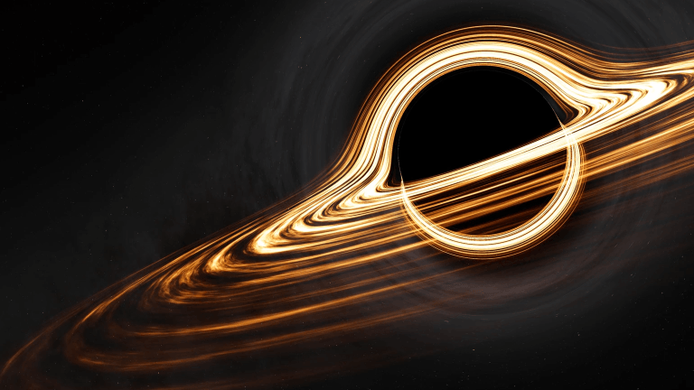

Un agujero negro supermasivo con una masa equivalente a 100 millones de soles, rotando a casi el 99.8% de la velocidad de la luz. La intensa gravedad de la singularidad curva el espacio-tiempo a su alrededor, generando un efecto de lente gravitacional: la luz emitida por la parte posterior del disco de acreción es desviada hacia arriba y hacia abajo, creando la ilusión de un halo brillante rodeando la sombra del horizonte de sucesos. Debido a esta deformación métrica, el tiempo transcurre drásticamente más lento en su proximidad; una hora en la órbita cercana equivale a siete años terrestres.
Punto de densidad infinita donde las leyes de la física conocida dejan de aplicarse. Un tema que se escapa a la compresion humana conocida hoy en dia por el hombre, lograremos descubrilor alguna vez?
La curvatura del espacio-tiempo desvía la luz y deforma la visión del fondo estelar, Sera un agujero negro un agujero de gusano o simplemente una masa masiva de destruccion.